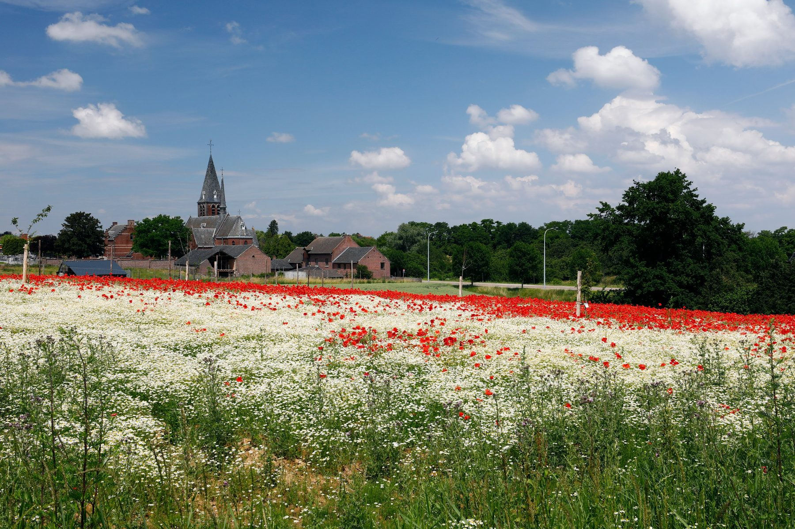
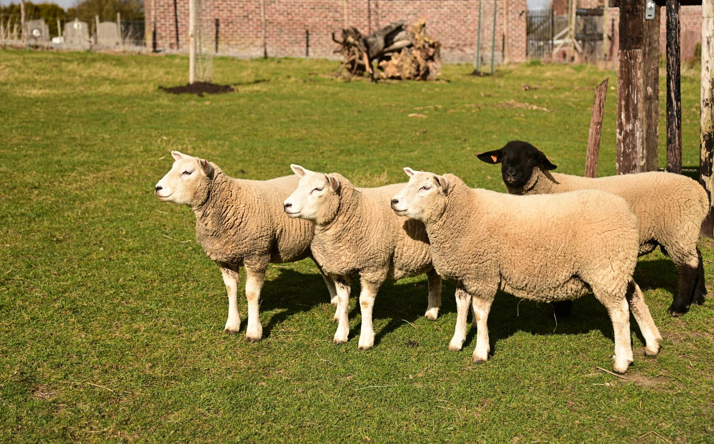
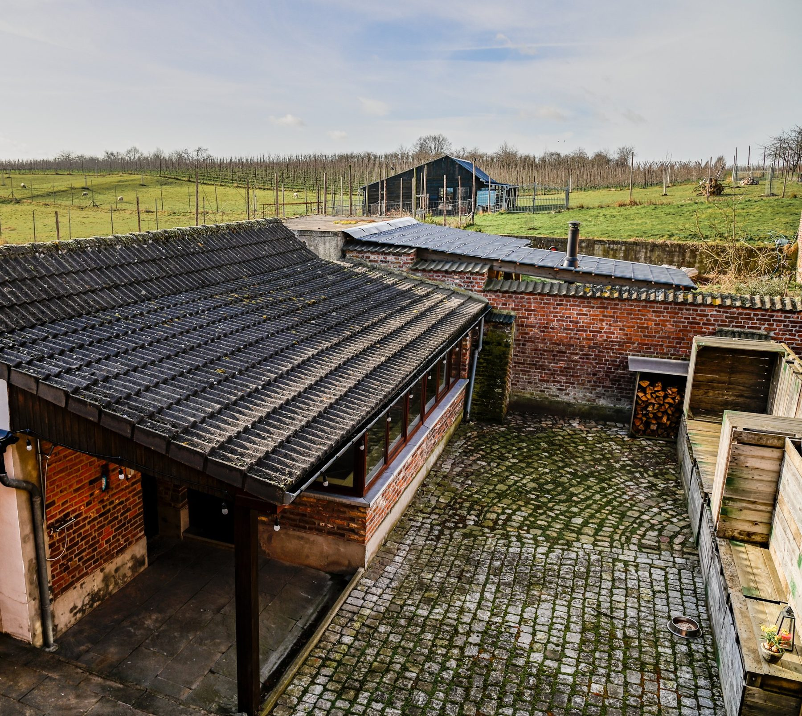
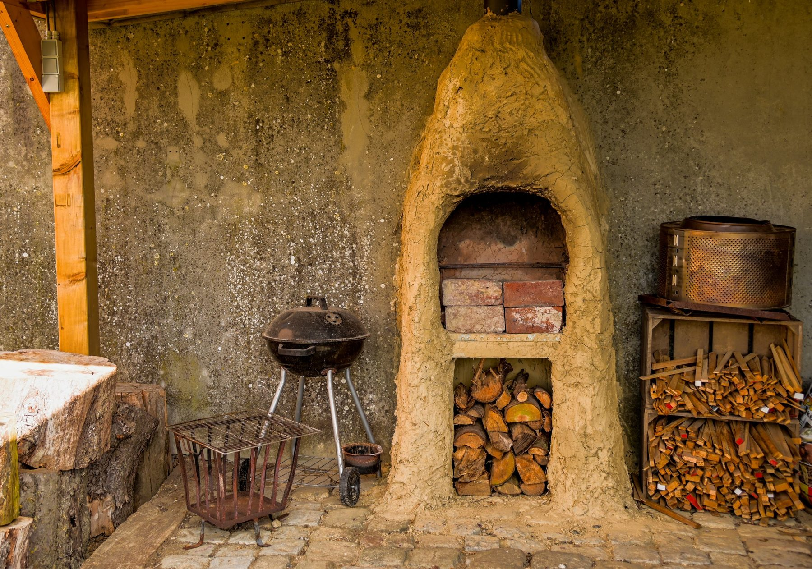
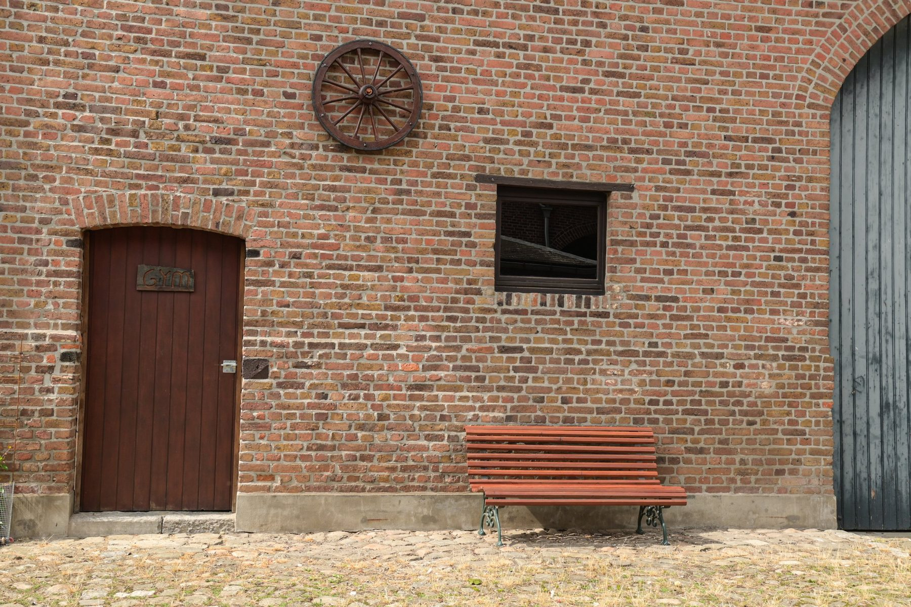
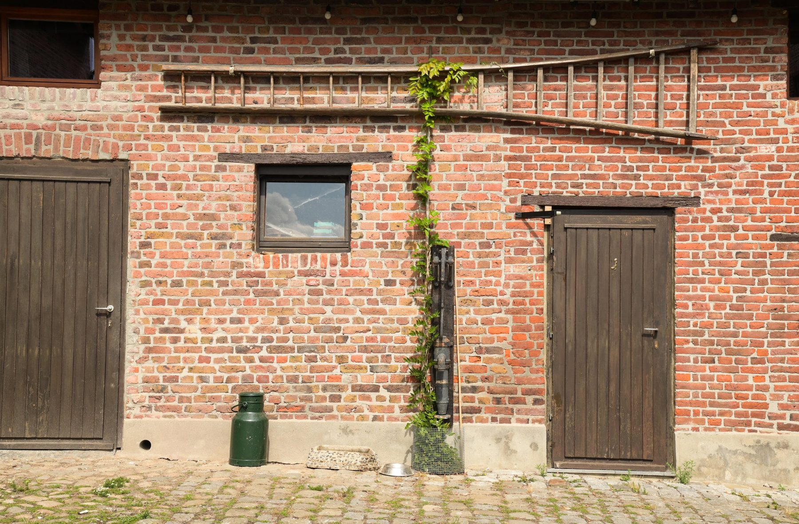
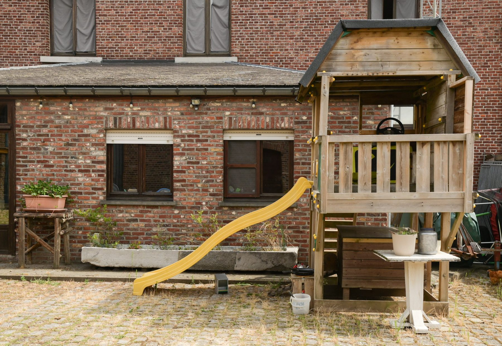
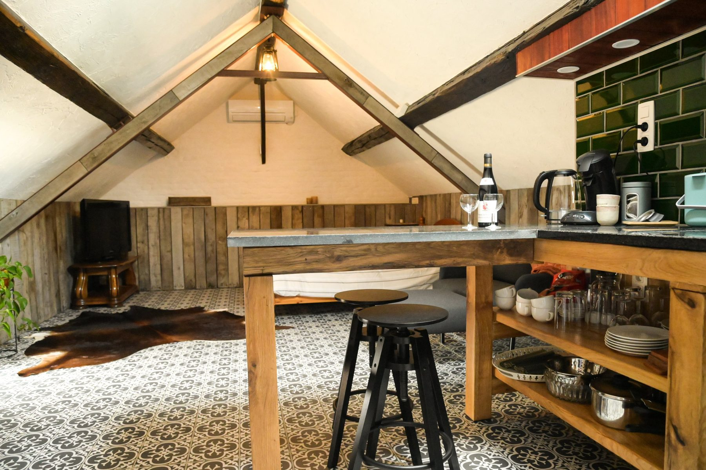
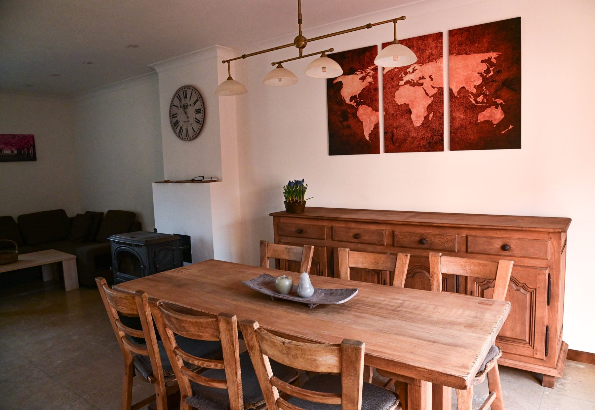

Gastenverblijven op een authentieke vierkantshoeve, midden in het groen van Sint-Truiden
Welkom bij Fort Groen. Op onze hoeve in Sint-Truiden bieden wij twee gastenverblijven aan, elk met een eigen karakter: de intieme Loft voor twee en het ruime Gastenhuis voor families en kleine groepen.
Fort Groen is meer dan een logeeradres. Rondom de verblijven leven onze dieren en planten, groeit het voedselbos en is er ruimte voor ambachten. Je logeert dus echt op een levende hoeve — landelijk en toch vlak bij de stad.

Een ruime loft met een rustiek karakter. Perfect voor een rustig weekend met twee of een korte vakantie op het platteland.

Een charmant en gezellig gastenverblijf met sauna en een warme, landelijke sfeer. Ideaal voor koppels, families of kleine groepen.
Kies een verblijf en bekijk wanneer het vrij is. Vind je een geschikte periode? Stuur ons dan je aanvraag — wij bevestigen zo snel mogelijk persoonlijk.
Liever via een boekingsplatform? Geen probleem — onze verblijven blijven ook daar te vinden. De kalender hierboven toont alle reservaties samen.
Fort Groen is een levende hoeve waar we stap voor stap bouwen aan een duurzaam en zelfvoorzienend geheel.
Onze schapen grazen tussen de hoogstamfruitbomen in de weide. Daarnaast horen ook konijnen, kippen en kalkoenen bij het dagelijkse leven op de hoeve.
In onze tuin kweken we seizoensgroenten en kruiden op een natuurlijke manier — vers van de grond tot op het bord.
We leggen een voedselbos aan: een gelaagd, eetbaar landschap van fruitbomen, struiken en vaste planten dat elk jaar rijker wordt.
In de maakOp de hoeve vind je ook Fort Maine Coon, onze kleinschalige Maine Coon cattery. Onze Maine Coons Sansa en Arya zijn een vertrouwd gezicht op de binnenplaats — grote kans dat ze je tijdens je verblijf even komen begroeten. Meer info op fortmainecoon.be.
Fort Groen ligt in een groene omgeving — perfect om te wandelen, fietsen en tot rust te komen. Tegelijk liggen gezellige dorpen, natuurgebieden en steden op korte afstand.
Trek erop uit langs landelijke wegen, boomgaarden en akkers. Ideaal om de streek op je eigen tempo te verkennen.
Sint-Truiden ligt in het hart van Haspengouw, bekend om zijn fruitteelt en vooral prachtig tijdens de bloesemperiode in het voorjaar.
Een stadsbezoek, een terrasje of een streekproduct halen? Het centrum van Sint-Truiden en de omliggende dorpen liggen vlakbij.
Een vraag over de verblijven of een groepsverblijf? Stuur ons gerust een bericht.